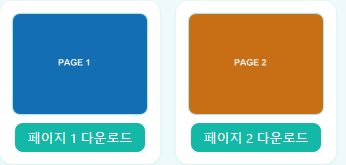

IMAGE TOOLBOX / GUIDE
PDF 파일 용량, 어떻게 줄일 수 있을까
이 사이트의 도구로 PDF 자체를 직접 압축할 수는 없지만, 우회하는 방법이 있습니다.
솔직한 전제: 이 사이트는 PDF 파일 자체를 압축하지 않습니다
PDF 변환 도구는 이미지를 PDF로 합치거나 PDF 페이지를 이미지로 추출하는 기능입니다. PDF 파일 자체의 용량을 줄이는 압축 기능은 없습니다. 대신 아래처럼 우회하는 방법으로 PDF 용량을 줄일 수 있습니다.
우회 방법: 추출 → 압축 → 재합치기
1) PDF 변환 도구에서 PDF를 페이지별 이미지로 추출합니다. 2) 추출된 이미지를 이미지 압축 도구에서 품질을 조절해 압축합니다. 3) 압축된 이미지를 다시 이미지→PDF로 합칩니다. 이 과정을 거치면 PDF 안에 들어있던 이미지의 용량이 줄어든 만큼 전체 PDF 파일의 용량도 줄어듭니다.

모든 PDF에 효과가 있는 건 아닙니다
이 방법은 스캔한 문서, 사진을 모은 PDF처럼 이미지가 용량 대부분을 차지하는 PDF에 효과적입니다. 이미지 용량을 줄이면 PDF 전체 용량도 그만큼 줄어들기 때문입니다.
반면 글자 위주의 텍스트 PDF는 이 방법의 효과가 거의 없습니다. 텍스트는 원래부터 용량이 매우 작기 때문에 압축할 여지가 거의 없고, 오히려 텍스트를 이미지로 바꾸는 과정에서 글자를 마우스로 선택하거나 검색하는 기능을 잃게 됩니다. 텍스트 위주 PDF는 이 우회법 대신 워드프로세서나 PDF 편집 프로그램의 용량 최적화 기능을 이용하는 것이 더 적합합니다.
자주 묻는 질문
이 사이트에서 PDF를 바로 업로드해서 압축할 수 있나요?
아니요. PDF 파일 자체를 압축하는 기능은 제공하지 않습니다. 이미지로 추출해서 압축한 뒤 다시 PDF로 합치는 우회 방법을 이용해야 합니다.
글자가 많은 보고서 PDF도 이 방법으로 용량을 줄일 수 있나요?
효과가 크지 않습니다. 텍스트는 이미 용량이 작아서 압축할 여지가 거의 없고, 이미지로 바꾸면 텍스트 선택·검색 기능을 잃게 됩니다. 텍스트 위주 PDF는 다른 방법을 권장합니다.
스캔한 문서 PDF는 얼마나 줄어드나요?
원본 스캔 품질과 압축 설정에 따라 다릅니다. 이미지 압축 품질별로 용량이 얼마나 줄어드는지는 실측 압축률 비교에서 확인할 수 있습니다.